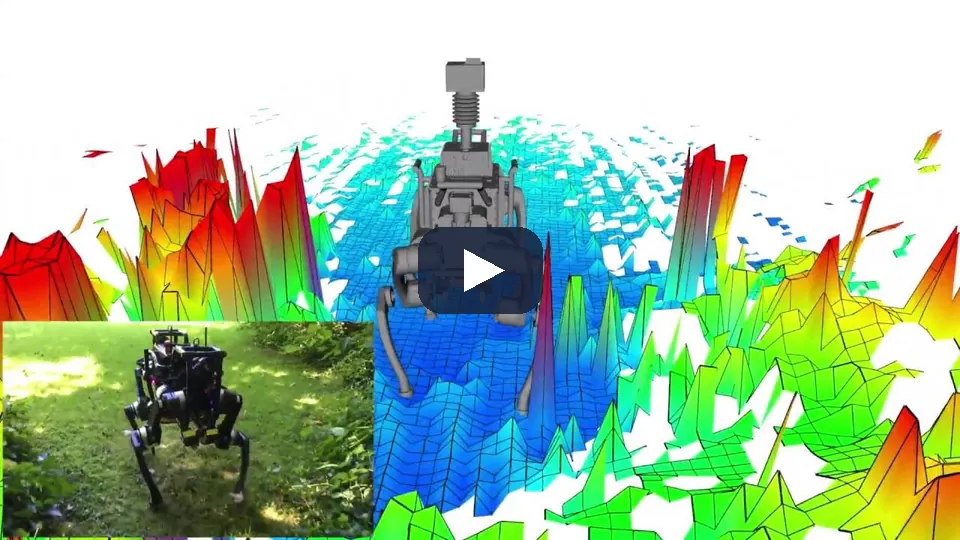
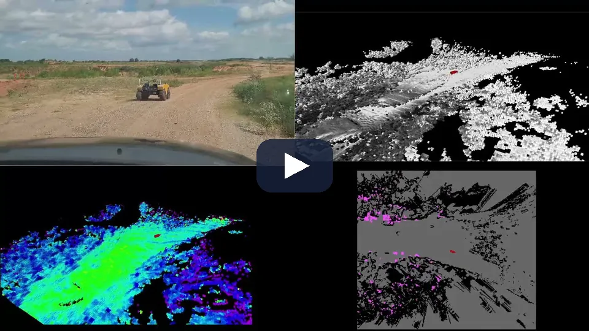
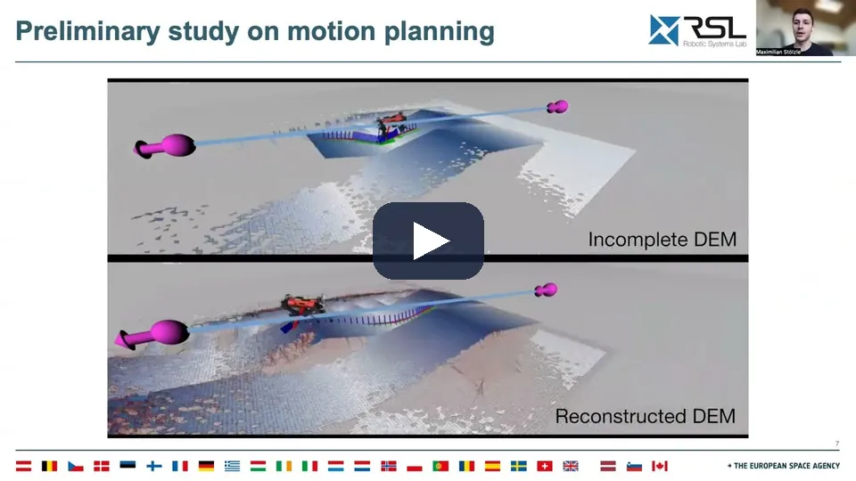
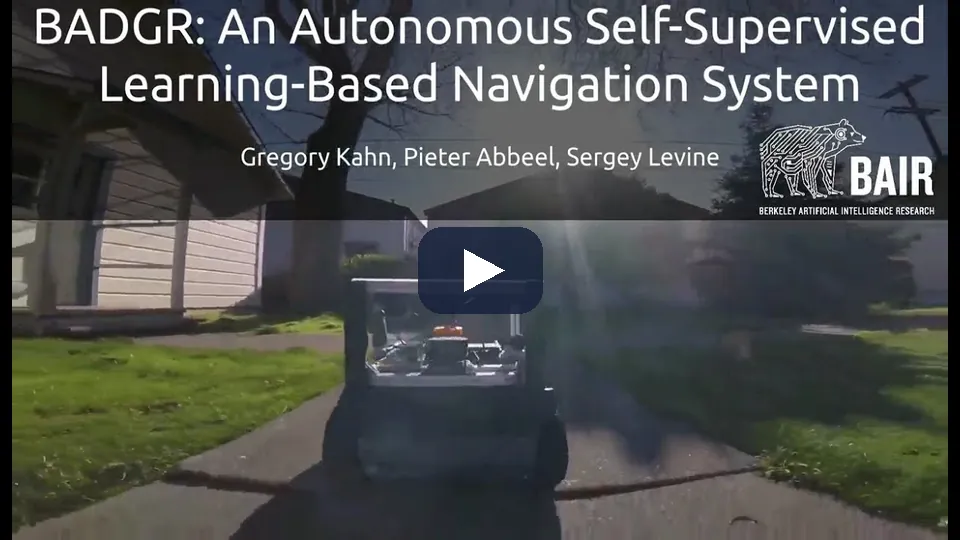
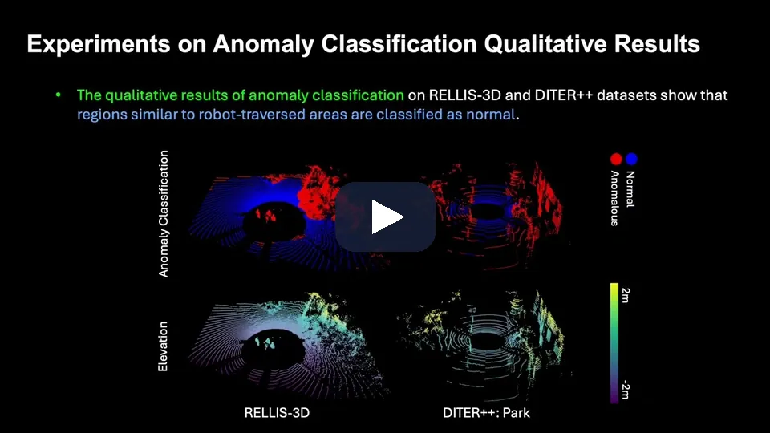
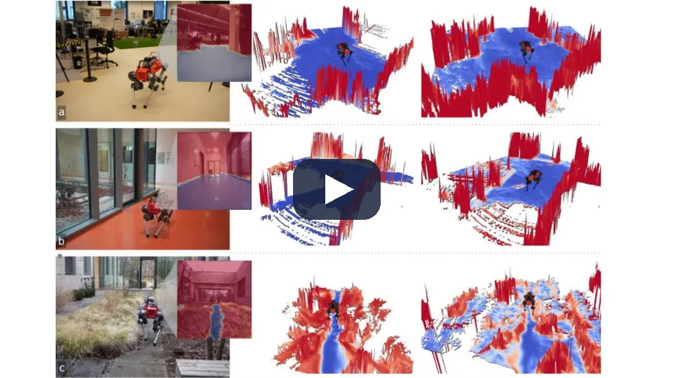
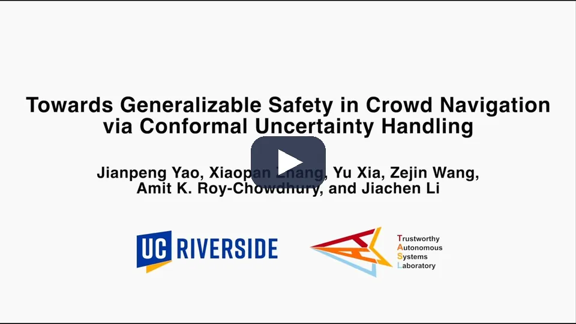
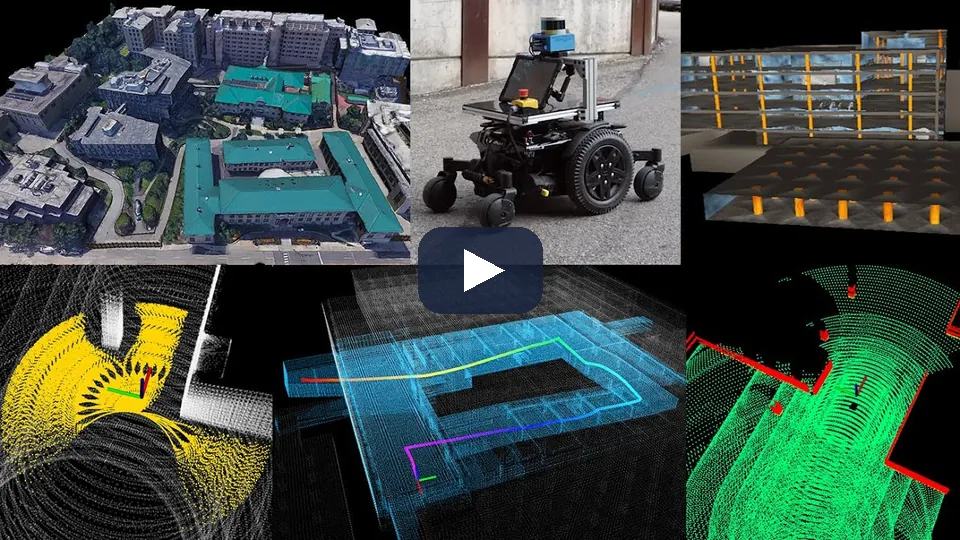
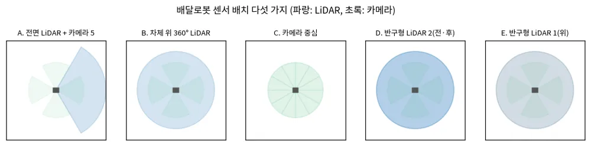
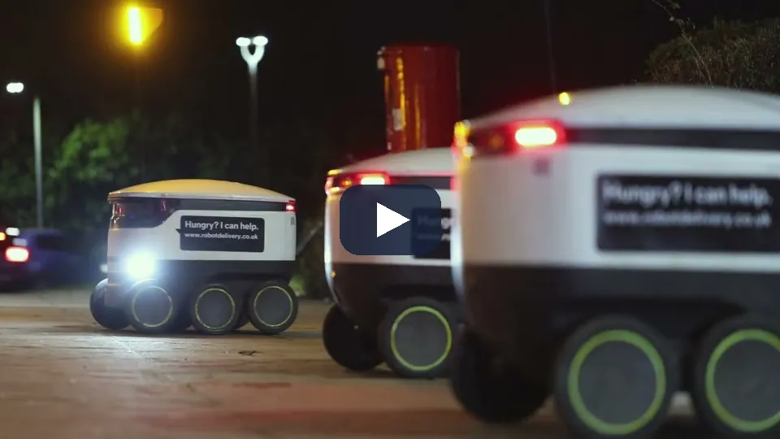

TRAVPLAN · 챕터 발표 · 인식 + 센서 배치
보도 위 지형을
TravMap으로 읽기
elevation mapping, 자기지도 traversability, 보행자 인식, 그리고 L1에서 잰 것
§A 인식
§H 센서 배치
A.13 작업 기록
A.14 최근 연구 비교
순서
지도, 비용, 사람을 차례로 살펴보고 우리가 잰 것으로 끝낸다
지형 지도 (A.1–A.5)
자동차 occupancy 대신 elevation mapping, 음의 장애물과 못 본 칸
Traversability (A.10)
사람 라벨에서 자기지도로, PU 문제, VLM 보조
비전 파운데이션 모델(VFM) · 동적 장애물 (A.11–A.12)
라벨 교사, 검출·추적·예측, Freezing Robot Problem
최근 연구 비교 (A.14)
2025–2026 연구 15편의 공통점과 차이점
작업 기록 (A.13)
그림자 규칙, 못 본 칸, 권장 L1, 다음 병목
센서 배치 (§H)
다섯 배치, 가격·연산, 주기·지연
질문은 하나다. 보도 배달로봇이 무엇을 보고 무엇을 모르는지를 지도에 어떻게 적는가.
§A · 이 챕터의 질문
인식은 센서 관측을 TravMap과 동적 장애물 목록으로 바꾼다
센서
전면 LiDAR, 스테레오, 카메라 5
→
인식
L0 가림 모사, L1 elevation mapping
→
TravMap · DynamicObstacles
8채널 격자, 보행자 원판
→
Planner
경로·궤적
→
Controller
body twist
| 채널 | 뜻 |
|---|---|
elev | 높이 |
grad_x, grad_y | 기울기 x·y |
slope, step, rough | 경사, 턱, 거칠기 |
cost | 비용(≥ 0.95면 치명 셀) |
sigma | 불확실성(못 본 칸은 1) |
L0
시뮬 지형에 가림을 모사한다(TP-0031). 그림자 상한과 깊이 prior로 40/40.
L1
합성 LiDAR를 elevation_mapping_cupy 코어에 넣는다(TP-0053).
DynamicObstacles
보행자 원판. 반경이 예측 시간에 비례해 커진다(TP-0012).
travplan: 표현은 costmap이 아니라 2.5D TravMap[8,H,W]이고, Planner와 Controller가 같이 읽는다.
§A · 계보 한눈에
네 줄기가 같은 시기에 "사람 라벨 없이, 큰 모델로" 움직였다
| 연도 | 지형 지도·Occupancy | Traversability | VFM | 동적 장애물 |
|---|---|---|---|---|
| 2020 | Lift-Splat-Shoot | RELLIS-3D, BADGR | — | Constant Velocity, Trajectron++ |
| 2021–22 | BEVFormer, elevation_mapping_cupy | TerraPN, How Does It Feel? | — | ByteTrack, BoT-SORT |
| 2023 | Occ3D, FlashOcc | WVN, STERLING | DINOv2, Grounding DINO | RT-DETR |
| 2024 | SparseOcc, GaussianFormer | V-STRONG, RoadRunner | Depth Anything V2, SAM 2 | D-FINE |
| 2025 | GaussianFormer-2 | — | DINOv3, DA3, SAM 3 | RF-DETR, MoFlow |
| 2026 | WalkOCC(보도 단안) | ViTA, PIVOT, SyNeT, GSAT | — | — |
깊이 카메라와 LiDAR 점군을 elevation mapping으로 합친다(A.2b)
기하 규칙에서 시작해 TravNet 자기지도로 고친다(A.10)
검출과 추적으로 DynamicObstacles를 만든다(A.12)
travplan: VFM은 라벨 교사로, 자동차 occupancy와 world model은 표현 설계 참고로 쓴다.
1 · 지형 지도 · Occupancy (A.1–A.5)
자동차 occupancy가 아니라
로봇 elevation mapping을 쓴다
칸마다 높이와 분산을 합치는 계보, 음의 장애물, 그리고 못 본 칸을 어떻게 두는가
A.2 · 자동차 계보
자동차 occupancy는 채택하지 않지만 표현의 교훈을 준다
Lift-Splat-Shoot [3]
픽셀별 깊이 분포로 특징을 lift해 BEV 격자에 splat한다
BEVFormer [4]
격자 query가 attention으로 특징을 모은다. nuScenes NDS 56.9
FlashOcc
2D convolution만 쓰고 채널을 높이로 바꾼다. 배포 친화적

채택하지 않는 이유
모두 차량을 둘러싼 멀티카메라 리그를 전제한다.
Orin에서 돌린 실측이 없다.
travplan: 격자 밀도, 높이 축, 가려진 칸의 정답 만들기는 이 계보에서 먼저 풀렸다.
[3] Lift-Splat-Shoot, ECCV 2020 — arXiv:2008.05711 · [4] BEVFormer, ECCV 2022 — arXiv:2203.17270
A.2b · 로봇 지형 지도
elevation mapping은 칸마다 높이와 분산을 Kalman으로 합친다
- 로봇 중심 2.5D 격자, 칸마다 1차원 Kalman 갱신 [1]
- elevation_mapping_cupy: CUDA 커널, 가시성 정리, 학습 traversability 필터 [2]
- 상한 층: 광선이 지나간 칸의 지면은 광선보다 높을 수 없다
- Orin Nano에서 0.025 m, 200×200칸 지도를 30 Hz로 돌린 보고가 있다
2026: elevation_mapping_cupy_core
ROS 의존이 없는 순수 Python 패키지로 분리됐다. travplan 래퍼의 getter가 그대로 있다.

travplan: L1의 코어이고, 상한 층이 그림자 상한(TP-0044)의 바탕이다.
[1] Fankhauser 등, CLAWAR 2014 · RA-L 2018 · [2] Miki 외, IROS 2022 — arXiv:2204.12876
A.2b · 로봇 지형 지도 · 영상
높이 지도는 로봇이 걷는 동안 관측을 더해 가며 쌓인다

로봇 둘레의 격자가 걸음마다 갱신된다. 관성·운동학 자세 추정과 LiDAR 거리 측정을 합쳐 지도를 만든다 [1].
앞 장의 Kalman 갱신이 이 격자의 칸마다 돈다. elevation_mapping_cupy는 같은 파이프라인을 CUDA 커널로 옮기고 가시성 정리와 상한 층을 더한 것이다 [2].
travplan: L1이 쓰는 elevation_mapping_cupy는 이 파이프라인의 GPU 판이다. 매핑 자체는 병목이 아니다.
[1] Fankhauser 등, Robot-Centric Elevation Mapping with Uncertainty Estimates, CLAWAR 2014 · 영상은 ETH RSL 채널(2016)
A.2b.3 · A.2b.7 · 음의 장애물
포트홀은 관측되지 않고 그림자로만 남는다
세 구현이 같은 그림자를 서로 다른 근거로 가리킨다.
광선 높이를 칸 높이의 상한으로 둔다 [2]
지면 경사를 외삽해 기대 높이와 관측 높이의 차를 본다 [5]
보도 배달로봇. 그림자에 이웃 최소 고도를 퍼뜨려 단차를 만든다 [6]


travplan: 그림자 상한은 광선 높이를, G-VOM은 경사 외삽을 쓴다. 같은 포트홀을 가리키는 독립된 두 신호다.
[5] Overbye·Saripalli, G-VOM, IEEE IV 2022 — arXiv:2109.13176 · [6] Mozzarelli 외 — arXiv:2403.13431
A.2b.3 · 음의 장애물 · 영상
G-VOM은 경사 외삽으로 찾은 음의 장애물을 지도의 1급 출력으로 낸다

네 화면이 한 장면이다. 뒤따르는 차량의 카메라, voxel 점군, 색으로 칠한 지형 지도, 그리고 장애물 지도(검정 경성, 분홍 연성 장애물). 음의 장애물은 별도 층으로 낸다. 내부는 3D voxel인데 출력은 2.5D 여러 장이다 [5].
해상도 0.40 m, 음의 장애물 문턱 0.5 m, 로봇 반지름 4.0 m는 이 체급의 값이다. GPL-3.0이라 코드도 쓰지 않는다.
travplan: 경사 외삽이라는 방법만 가져온다. 파라미터와 코드는 가져오지 않는다.
[5] Overbye·Saripalli, G-VOM, IEEE IV 2022 — arXiv:2109.13176 · 영상은 저자 채널(2021), 코드 저장소 README가 건다
A.5.1 · A.5.4 · 지도 구현체 비교
구현체를 견줘도 2.5D elevation mapping을 바꿀 이유는 없다
| 구현 | 라이선스 | 미관측·음의 장애물 | 실측 속도 | travplan 관점 |
|---|---|---|---|---|
| elevation_mapping_cupy | MIT | upper_bound (TP-0044가 씀) | Xavier 20–49 Hz | 유지(현재 L1) |
| FastDEM [7] | BSD-3 | visibility_logodds, 인페인팅 별도 층 | Orin 100+ Hz(README) | CPU 기준선(TP-0084) |
| CSIRO ohm | BSD-3 | 6상태 열거형 | NUC 약 5 Hz | TP-0048 규칙 설계에 참고한다 |
| G-VOM [5] | GPL-3.0 | negative_obstacle 1급 출력 | 트럭용 0.4 m | 재구현만 |
| CMU terrain_analysis | 없음 | negObstacle, shrink/expand | 실시간 | 파라미터 설계만 |
| nvblox | Apache-2.0 | UnobservedEsdfPolicy 3종 | Orin Nano ESDF 6.2 ms | clearance 채널 수단 |
FastDEM을 TP-0084의 CPU 기준선으로
TP-0048 그림자 판정 규칙 네 개
오버행을 메울 clearance 9번째 채널
travplan: 표현을 바꾸지 않는다. 상용 인터페이스(Spot, Go2)도 전부 2.5D다.
[7] FastDEM, 고려대 ISR Lab (GitHub Ikhyeon-Cho/FastDEM) · 표는 2026-09 기준
A.2b.7 · 미관측을 1급 상태로
못 본 칸은 분산으로 전파하거나 생성으로 채운다
가림을 자세 분산으로
Fourier 지형 계수의 역 Hessian 분산을 pitch·roll로 전파한다.
실패율 18.9%, 기준선 46.1%·41.7%
공간 상관 분산
공분산을 convolution 두 번으로 만든다.
ATE 2.4277 → 0.6588(칸 독립 대비)
diffusion 모델로 채움
못 본 voxel만 생성 확률로 갱신한다.
추론 0.44 s, 못 본 포트홀을 덮을 위험


travplan: 못 본 칸은 그림자 상한으로 보수적으로 둔다. 생성 채움은 cost가 아니라 탐색에만 쓴다.
[8] Manoharan 등 — arXiv:2609.39105 · [9] Raja 등, ProTerrain — arXiv:2510.19364 · [10] Achey 등, SceneSense — arXiv:2506.20049
A.2b.7 · 미관측 · 영상
가려진 칸은 정답 지도 없이 자기지도로 복원할 수 있다

이미 불완전한 실제 DEM에 레이캐스팅으로 가림을 더 넣고, 원래 관측됐던 칸을 복원하도록 학습한다. 정답 지도가 필요 없다. Telea 인페인팅은 뭉개고, 학습 쪽은 지형 구조를 지킨다.
복원한 높이는 추정이다. 앞 장의 SceneSense와 같은 "채움" 갈래라 cost에 넣지 않는다.
travplan: 가림을 더 넣어 복원을 배우는 트릭은 L0/L1 가림 학습 데이터를 만드는 데 쓴다. 결과를 cost에 넣지는 않는다.
Stölzle 외, Reconstructing Occluded Elevation Information in Terrain Maps with Self-Supervised Learning, RA-L 2022 — arXiv:2109.07150 (A.2b ⑥) · 영상은 ETH RSL 채널(2022)
2 · Traversability (A.10)
"이 땅을 지나갈 수 있는가"를
사람 라벨 없이 배운다
사람 라벨 분할에서 로봇 경험 기반 자기지도로, 다시 비전 파운데이션 모델과 VLM으로
A.10.1 · 계보
라벨의 출처가 사람에서 로봇이 겪은 사건으로 바뀌었다
| 연도 | 이름 | 라벨 출처 |
|---|---|---|
| 2020 | RELLIS-3D [11] | 사람 라벨(20클래스) |
| 2020 | BADGR [12] | 충돌·충격 사건 |
| 2022 | TerraPN | IMU 진동·주행거리 오차 |
| 2022 | How Does It Feel? | proprioception 비용 |
| 2024 | V-STRONG, RoadRunner | 주행 궤적, 기존 스택 사후 추정 |
| 2026 | ViTA, CATNAV, PIVOT | VFM·VLM |
| 2026 | SyNeT, GSAT, LHT | 접지 궤적 양성 + PU |

BADGR가 travplan 구조의 원형이다
사건 라벨은 TravNet 자기지도(TP-0010)와, 행동 시퀀스 샘플의 가중 평균은 MPPI와 같다.
How Does It Feel?
속도를 비용 예측의 입력으로 넣었다. 사람 개입을 최대 57% 줄였다.
RoadRunner
카메라·LiDAR에서 비용과 높이를 함께 낸다. 지연 500 → 140 ms.
[11] RELLIS-3D, ICRA 2021 — arXiv:2011.12954 · [12] BADGR, RA-L 2021 — arXiv:2002.05700 · LHT = Long-Horizon Traversability
A.10.1 · 계보 · 영상
BADGR는 스스로 모은 충돌·충격 사건으로 풀밭을 지나갈 수 있다고 배운다

사람 라벨이 없다. 충돌과 덜컹거림을 센서로 재서 그 직전의 영상과 짝짓는다. 행동 시퀀스마다 미래 사건을 예측하고, 가장 좋은 시퀀스를 골라 움직인다 [12].
가 본 곳만 안다. 위험한 사건은 일부러 모으기 어렵다. 다음 장의 PU 문제가 여기서 시작된다.
travplan: 사건 라벨은 TravNet 자기지도(TP-0010), 행동 시퀀스 샘플의 가중 평균은 MPPI와 구조가 같다.
[12] Kahn·Abbeel·Levine, BADGR, RA-L 2021 — arXiv:2002.05700 · 영상은 저자 채널(2020), 프로젝트 페이지가 건다
A.10.1 · 2026 자기지도
2026년 연구는 "음성 라벨이 없다"는 PU 문제를 세 방식으로 푼다
SyNeT [13]
diffusion inpainting으로 지나갈 수 없는 물체를 영상에 넣는다.
LORT AUROC 0.935 → 0.979, Orin INT8 11.6 FPS
GSAT [14]
양성 latent 둘레의 hypersphere 밖을 이상으로 본다. LiDAR 기하만 쓴다.
Gazebo 10/10, 기하 규칙 4/10
LHT [15]
위성·항공 LiDAR·OSM, GPS 궤적을 양성으로 둔다.
개입 14회 → 2회


travplan: TravNet은 라벨 없는 칸을 손실에서 빼서 이 문제를 이미 피한다. 세 방법은 실물·영상 단계(TP-0059)에서 다시 다룬다.
[13] Kim 등, SyNeT — arXiv:2602.00814 · [14] Cho 등, GSAT, ICRA 2026 — arXiv:2603.07480 · [15] Viswanath 등 — arXiv:2607.23743
A.10.1 · 2026 자기지도 · 영상
GSAT은 LiDAR 기하만으로 양성 분포 밖을 이상으로 보아 지나갈 수 없는 곳을 찾는다

높이 지도 위에 정상(파랑)과 이상(빨강)이 칠해진다. 로봇이 지나간 곳과 닮은 기하는 정상, latent hypersphere 밖은 이상이다. 입력이 LiDAR 기하라 조명에 강하다 [14].
라벨 없는 칸을 전부 음성으로 두면 F1이 오히려 떨어진다. hypersphere 안은 정상으로 당기고 밖만 밀어낸다. 같은 낮은 덤불이 Go2에는 정상, SCOUT MINI에는 이상이다.
travplan: 입력이 기하라 TravNet과 가장 가깝다. 가져올 것은 OOD 경계(hypersphere 거리)와 기하 증강이다.
[14] Cho 등, GSAT, ICRA 2026 — arXiv:2603.07480 · 영상은 저자 연구실 채널(2026), 프로젝트 페이지가 건다
A.10.2 · 비전 파운데이션 모델과 VLM
VLM은 기본 비용이 아니라 막혔을 때의 보조 판단으로 쓴다
기하 계획이 막힐 때만 VLM 재계획. 자율 비율 59.6% → 97.0%, 개입 11 → 3회
비슷한 장면은 이전 위험 평가를 재사용한다. VLM 호출 85.7% 감소
SAM2에 traversability prompt를 넣고 기하 지식을 증류한다

travplan: 기하 TravMap이 평소 비용을 맡고, 풀밭·물웅덩이처럼 막혀 보일 때만 TravNet이나 VLM에 묻는다.
[16] PIVOT — arXiv:2609.20983 · [17] CATNAV — arXiv:2603.22800
3 · 비전 파운데이션 모델 · 동적 장애물 (A.11–A.12)
큰 모델은 교사로 쓰고,
사람은 로봇 좌표에서 따라간다
라벨 교사, 검출·추적·예측, 그리고 예측을 주행으로 잇는 법
A.11 · 비전 파운데이션 모델
비전 파운데이션 모델은 로봇에서 돌리기 전에 라벨 교사로 먼저 쓴다
| 이름 | 내는 것 | 가중치 라이선스 |
|---|---|---|
| DINOv2 [18] | 범용 영상 특징 | Apache-2.0 |
| DINOv3 [18] | 고해상도 조밀 특징 | 자체 |
| Depth Anything V2 [19] | 단안 상대 깊이 | Small만 Apache-2.0 |
| Depth Anything 3 | 깊이와 카메라 광선 | L·Metric·Mono Apache |
| SAM 2 [19] | 지정 물체 영상 분할 | Apache-2.0 |
| SAM 3 | 명사구 인스턴스 분할 | 자체 |
| Grounding DINO [19] | 텍스트로 지정한 물체의 상자 | Apache-2.0 |

WVN이 고정 DINO 특징 위에서 5분 만에 적응한다
단안 깊이로 근거리 높이를 채운다. 상대 깊이는 스케일이 없다
킥보드, 볼라드, 공사 표지처럼 학습 클래스 밖의 장애물
travplan: 오프라인에서 마스크·깊이 pseudo-label을 만들어 작은 실시간 모델(검출기, TravNet)로 증류한다.
[18] DINOv2 — arXiv:2304.07193 · DINOv3 — arXiv:2508.10104 · [19] Depth Anything V2 — arXiv:2406.09414 · SAM 2 — arXiv:2408.00714 · Grounding DINO — arXiv:2303.05499
A.11 · 비전 파운데이션 모델 · 영상
WVN은 고정한 DINO 특징 위에 작은 head를 현장에서 5분 만에 학습한다

왼쪽이 카메라와 예측(파랑이 지나갈 수 있음), 오른쪽이 그 예측을 입힌 높이 지도다. 사무실, 복도, 마른 풀밭에서 걸으면서 라벨 생성·학습·추론이 함께 돈다.
큰 백본은 고정하고 작은 head만 배운다. 라벨은 사람이 5분쯤 몰며 모은 속도 추종 오차뿐이어도 된다. 높은 풀을 기하 규칙은 막지만 WVN은 통과로 본다.
travplan: 영상 TravNet을 도입할 때 따를 구조다. 큰 백본은 고정하고, 작은 head만 로봇 경험으로 배운다.
Mattamala·Frey 외, Wild Visual Navigation, Autonomous Robots 2025 — arXiv:2404.07110 (A.7) · 영상은 ETH RSL 채널(2024), 프로젝트 페이지가 건다
A.12.1–A.12.4 · 검출 · 추적 · 예측
검출은 Apache DETR로 바꾸고, 추적과 예측은 로봇 좌표로 옮긴다
검출
YOLO(AGPL) → RT-DETR, D-FINE, RF-DETR(Apache) [20]
→
거리
검출 상자에 투영되는 LiDAR 점으로 3D 중심. 바닥점은 폴백
→
추적
odom 좌표 등속 칼만 + 헝가리안 (ByteTrack·BoT-SORT 대체) [21]
→
예측
등속 모델이 기준선. 시간에 비례해 커지는 원판 [22]
| 검출기 | COCO 성능(논문, T4) | 라이선스 |
|---|---|---|
| Ultralytics YOLO | 모델마다 다름 | AGPL-3.0 |
| RT-DETR | R50 53.1 AP, 108 FPS | Apache-2.0 |
| D-FINE | L 54.0 AP, 124 FPS | Apache-2.0 |
| RF-DETR | 2x-large가 실시간 첫 60 AP | Apache-2.0 |
등속 모델은 이기기 어렵다
마지막 속도로 직진하는 기준선이 신경망 SOTA와 비슷하거나 낫다. 생성 예측(Trajectron++, MoFlow)은 상호작용이 문제가 될 때 다룬다.
ADE는 내비게이션 성능을 대변하지 못한다
평가는 폐루프 지표로 한다. 충돌 수와 최소 여유 거리다.
travplan: 검출은 카메라가 맡고, 거리는 LiDAR가 재며, 출력은 지금 그대로 DynamicObstacles다.
[20] RT-DETR, CVPR 2024 · D-FINE, ICLR 2025 · RF-DETR, ICLR 2026 · [21] ByteTrack, ECCV 2022 · BoT-SORT · [22] Constant Velocity Model, RA-L 2020 — arXiv:1903.07933
A.12.5 · Freezing Robot Problem
완벽하게 예측해도 양보는 풀리지 않는다
"even under perfect individual prediction … the FRP still occurs if the crowd adopts specific configurations." [23]
원인은 정확도가 아니라 구조다. 예측이 로봇의 계획과 무관하면, 나란히 걷는 사람들 앞에서 "모든 경로가 막혔다"가 된다.

PGIF-MPPI [24] 복도 300 시나리오, 밀도 3단계
| 희박 | 중간 | 조밀 | |
|---|---|---|---|
| 기준선 성공 | 78.0 % | 29.0 % | 18.0 % |
| 충돌 | 22.0 % | 71.0 % | 82.0 % |
| 타임아웃 | 0.0 % | 0.0 % | 0.0 % |
| PGIF 성공 | 93.0 % | 78.0 % | 41.0 % |
| 충돌 | 0.0 % | 0.0 % | 0.0 % |
| 타임아웃 | 7.0 % | 22.0 % | 59.0 % |
충돌이 사라진 자리를 타임아웃이 그대로 채운다.
travplan: 안전 비용과 함께 살아 있게 하는 장치(liveness)를 설계에 넣어야 한다.
[23] Trautman 외, IJRR 2015 34(3) (원 논문 IROS 2010) · [24] PGIF-MPPI — arXiv:2608.08323 · [31] Mavrogiannis 외 — arXiv:2103.05668
A.12.4 · 예측 보정
예측 오차의 폭은 학습 때나 배포 중에 맞춘다
Calibrated Gaussian Predictors [25]
정답 Mahalanobis 거리가 카이제곱 분포를 따르도록 손실을 준다.
CoCoNav [26]
horizon별 conformal 임계값을 온라인으로 맞추고, MPC 해를 그 범위로 검사한다. 12명 정면 흐름 성공 100%·충돌 0%.

travplan: 기본 시뮬은 예측 오차가 0이다. 반응형 보행자(TP-0167)에서 오차가 생길 때 시작한다.
[25] Cheraghi Pouria 등 — arXiv:2603.10407 · [26] Guo 등, CoCoNav — arXiv:2608.07751
A.12.4 · 예측 보정 · 영상
conformal로 맞춘 오차 범위를 제약으로 쓰면 군중 속 안전 여유에 근거가 생긴다

예측기가 틀릴 폭을 최근 오차로 온라인 추정해 관측에 더하고, 제약 강화학습이 그 범위를 지키게 한다. 분포 안 성공률 96.93 %, 충돌 3.72배 감소 [30].
앞 장의 "배포 중" 보정이다. 속도·정책·집단 행동이 바뀐 분포 밖에서도 강건했다.
travplan: 반응형 보행자(TP-0167)에서 예측 오차가 실제로 생길 때, 이런 범위 검사를 Controller 뒤에 붙인다.
[30] Yao 등, CoRL 2025 — arXiv:2508.05634 · 영상은 저자 연구실(Trustworthy Autonomous Systems Lab) 채널(2025), 프로젝트 페이지가 건다
A.6–A.9 · 다른 로봇에서
몸이 지형과 닿는 방식이 인식 설계를 정한다
| 도메인 | 지배적 제약 | 대표 접근 | travplan 적용 |
|---|---|---|---|
| 자동차(정적 occupancy) | 멀티카메라 리그 | MonoScene, SurroundOcc | 채택 안 함 |
| 자동차(flow·world model) | 위 + 시간 예측 | OccWorld, RiskWorld | 문제 설정만 참고 |
| 4족 보행 | 미리 보지 않으면 큰 장애물을 못 피함 | elevation map + WVN 자기지도 | 직접 채택한 계보 |
| 휴머노이드 | 2점 지지, 자기 몸 가림 | 발밑 복원, 전신 occupancy | 사각지대 처리 참고 |
| travplan(스워브) | 적재함 사각, 근거리 동적 장애물 | emap + TravMap.SIGMA | — |
모두 데스크톱 GPU급이다. RiskWorld가 RTX 4090 11.5 FPS로 최선이다. "위험할 때만 재계획"은 Planner D에 참고한다.
0.2 m 칸의 25% 분위수를 지면으로 두고 높이 임계값 하나로 판단한다. NUC 한 대로 돈다. 바퀴형 공개 기준이다.
travplan: 4족의 교훈 하나를 쓴다. 지형을 완벽히 재구성하지 않아도, 얼마나 믿을 만한지를 함께 알면 된다.
A.9.1 · CMU 지형 분석 · 영상
바퀴형 공개 기준인 CMU 자율 스택은 NUC 한 대로 지형 분석과 탐사를 돌린다

바퀴 로봇 한 대가 LiDAR 점군에서 지형을 분석하고 건물 안팎을 탐사한다. 시뮬레이션 환경 여러 개와 실제 로봇 배포가 같은 모듈을 쓴다.
0.2 m 칸의 25 % 분위수를 지면으로 두고 높이 임계값 하나로 판단하는 terrain_analysis. 음의 장애물(negObstacle)과 shrink/expand 파라미터는 TP-0048 설계에 참고한다.
travplan: 라이선스가 없어 파라미터 설계만 참고한다. 바퀴형 공개 기준으로 둔다.
CMU Autonomous Exploration Development Environment, terrain_analysis(A.9.1 · A.2b.5) · 영상은 저자 채널(2020)
4 · 최근 연구 비교 (A.14)
최근 연구는 "지나간 자리와
본 자리만 안다"를 정면으로 다룬다
자기지도 traversability, 지형 불확실성, 보행자 예측 보정의 15편
A.14 · 비교표 1/2 · 자기지도 traversability
지나간 자리를 양성으로 쓰고, 신호는 연구마다 다르다
| 이름(연·발표) | 입력 | 학습 신호 | 불확실성 | 로봇·실험 |
|---|---|---|---|---|
| SyNeT (2026) | RGB | 궤적 양성 + 합성 음성 | 없음 | RELLIS-3D, Orin INT8 11.6 FPS |
| GSAT (2026, ICRA) | LiDAR BEV | 궤적 양성 + 추종 오차 | hypersphere 거리 | SCOUT MINI, Go2, 10/10 |
| Long-Horizon (2026) | 위성 + 항공 LiDAR | nnPU + 기하 prior | 없음 | Warthog, 개입 14 → 2 |
| COTRATE (2026) | RGB | proprioception·IMU 점수 | 미확인 | Spot, Husky, 약 5만 장 |
| ViTA (2026) | RGB | 분할 + 기하 증류 | 경계 확신 낮춤 | 오프로드 데이터셋 |
| PIVOT (2026) | RGB + 기하 | 에너지·진동·슬립 | 없음 | 6.4 km, 개입 11 → 3 |
| Experience-Driven CL | RGB(DINOv3) | 접지 성질 5개 | evidential | Go2 접지 951개 |
| Task-Conditioned | 높이 + 명령 속도 | 시뮬 foothold | 앙상블 + MC dropout | 시뮬 MPPI 10회 중 8회 최저 |
travplan: Orin에서 잰 것은 SyNeT 하나뿐이다. 입력이 기하인 GSAT이 TravNet에 가장 가깝다.
[27] Bricarello 등 — arXiv:2609.39755 · [28] Singh 등 — arXiv:2605.00261 · [29] COTRATE — arXiv:2605.28442 · ViTA — arXiv:2605.29565
A.14 · 비교표 2/2 · 지형 불확실성 · 보행자
지형은 분산을 계획까지 보내고, 보행자는 오차 폭을 맞춘다
| 이름(연·발표) | 입력 | 방법의 핵심 | 불확실성 | 로봇·실험 |
|---|---|---|---|---|
| ProTerrain (2025) | 높이 + 영상 | 공간 상관 공분산 | 상관 aleatoric | ROUGH11(궤도형) |
| Occlusion-Aware (2026) | 깊이 점군 | 역 Hessian 분산 → 자세 | 가림 epistemic | 실패 18.9% |
| SceneSense (2025) | LiDAR occupancy | diffusion으로 못 본 voxel 생성 | 센서보다 낮은 확률 | Spot, FID 개선 |
| WalkOCC (2026) | 단안 RGB | ray-marching occupancy | 미확인 | Sidewalk3D(보도) |
| Conformal + 제약 RL (CoRL 2025) | 보행자 궤적 | 적응형 conformal 범위 | conformal | 분포 안 96.93% |
| Calibrated Gaussian (2026) | 보행자 궤적 | 카이제곱 정합 손실 | 보정 가우시안 | ETH/UCY |
| CoCoNav (2026) | 카메라 + LiDAR | horizon별 conformal PI | 보정 오차 범위 | 12명 정면 100% |
travplan: 보행자 쪽 셋은 정확도가 아니라 오차 폭의 보정을 다룬다. 코드가 공개된 것은 Calibrated Gaussian 하나다.
[29] WalkOCC — arXiv:2606.19122 · [30] Yao 등, CoRL 2025 — arXiv:2508.05634 · 나머지는 [8]–[10], [25], [26]
A.14 · 공통점
네 가지가 겹치고, travplan은 그중 셋에 이미 서 있다
사람 라벨 대신 로봇 경험을 쓰고, 모르는 칸은 모름으로 남긴다.
지나간 자리만 양성으로 쓴다
접지 궤적, 발자국, GPS 궤적이 양성이다. travplan FootprintLabeler와 같은 출발점이다.
라벨 없는 칸을 음성으로 두지 않는다
GSAT은 전부 음성으로 두면 F1이 떨어진다는 것을 보여 줬다. travplan은 그 칸을 손실에서 뺀다.
큰 시각 모델은 고정하고 작은 헤드만 배운다
DINOv3 ViT-S, DINOv3-SAT, SAM2. 학습 데이터가 작은 로봇 경험이기 때문이다.
불확실성을 계획이 쓰는 형태로 낸다
자세 분산, costmap, 구간 임계값. travplan은 TravMap.SIGMA로 넘긴다.
travplan: 셋째(큰 시각 모델 고정)만 아직이고, 영상 TravNet을 도입할 때의 일이다.
A.14 · 차이점
여섯 축에서 갈리고, 보도에서는 기하 쪽이 먼저다
| 축 | 갈래 | travplan의 자리 |
|---|---|---|
| 음성을 어디서 | 합성(SyNeT) · hypersphere(GSAT) · nnPU(LHT) | 연속 회귀 + 마스킹이라 지금은 불필요 |
| 입력 | 영상(마찰·재질) · 기하(조명에 강함) | 포트홀·턱이 주된 위험이라 기하 먼저 |
| 불확실성이 재는 것 | (가) 지형 관측 부족 · (나) 모델 epistemic · (다) 예측 구간 coverage | SIGMA는 (가): 이진 또는 cost 민감도(TP-0054) |
| 못 본 칸 | 보수적으로(그림자 상한) · 생성으로 채움(SceneSense) | 보수적으로 |
| 보정 시점 | 학습 때(싸지만 분포 이동에 약함) · 배포 중(CoCoNav) | 보행자는 몇 스텝 뒤 위치가 보여 배포 중 가능 |
| 실시간성 | Orin 실측은 SyNeT뿐, SceneSense 0.44 s | 계획 시간 기준에 걸리는 것은 뺀다 |
travplan: 포트홀과 턱이 주된 위험인 보도에서는 기하 입력과 보수적인 미관측 처리가 먼저다.
A.14 · travplan에 주는 의미
가져올 것은 측정 절차와 조건부 안전 필터다
L1 인식 루프(elevation_mapping_cupy, 그림자 상한, 스테레오)와 2.5D TravMap
- 위성·OSM 장거리 지도(Planner 과제)
- Fourier 피팅, 공간 상관 공분산(무거움)
- VLM costmap(계획 시간)
- 생성 채움을 cost에
TravNet log_var σ가 cost 오차 순위를 맞히는지 잰다(TP-0054 방식)
CoCoNav식 conformal 범위 검사를 Controller 뒤에. 720 에피소드 짝 비교
영상 TravNet에 합성 음성, 실물에서 마스킹 대 nnPU
travplan: 새 방법보다 먼저, 이미 내는 σ가 맞는지 잰다. 표현(2.5D TravMap)은 바꾸지 않는다.
5 · travplan 작업 기록 (A.13)
위험은 못 본 칸에 있었고,
L1의 치명은 지도 쪽 원인이었다
그림자 판별 규칙, 차체 기준 채점, 근거리 미관측, σ, 칸 정렬, 그리고 다음 병목
A.13.1 · TP-0085
문헌의 기울기 규칙은 우리 근거 규칙을 어느 작동점에서도 이기지 못했다
| 그림자 판별 규칙 | 재현율(포트홀) | 전방 오탐(down_curb) |
|---|---|---|
| 상한만(prior 없음) | 0.76 | 1.7 |
| 근거 규칙(TP-0067, 기본) | 0.89 | 2.8 |
| 기울기 0.15 | 0.89 | 47.0 |
| 기울기 0.1 | 0.95 | 63.7 |
| 기울기 0.5 | 0.77 | 1.7 |
왜 못 잡나
포트홀의 시선은 사방 테두리를 스쳐 상한이 거의 평면이다. 가파른 곳은 테두리뿐이고, 그것은 근거 규칙을 다른 이름으로 부른 것이다.
4 시나리오 × 6 seed. 회귀 guidance+mppi 40/40 유지. results/p2-shadow-rules.tsv

results/p2-shadow-rules.tsvtravplan: 기본값을 바꾸지 않았다. 기울기 0.1의 재현율 0.95는 놓치는 낙차가 있다는 단서로 남겼다(TP-0095).
A.13.6 · TP-0100
차체 기준으로 재니 위험은 "못 본 칸"에 있었다

results/tp0100_belief_chassisMISS의 99% 이상이 아직 못 본 칸이다. 못 본 칸은 cost 0.5로 남는다.
그림자 상한·깊이 prior는 근거리 도달 가능 MISS를 줄이지 않는다(2,206 → 2,204).
센서 높이 0.3 → 0.8 m가 근거리 MISS를 3.4배 줄인다.
A.13.7 · A.13.8 · TP-0101 · TP-0065
둘레 1.5 m의 못 본 칸을 치명으로 두고, 그 대가는 전면 스테레오가 상쇄한다
| L1 설정 | 도달 가능 근거리 MISS | 음의 지형 오탐 | 평균 도달 |
|---|---|---|---|
| 상한 + 깊이 prior | 6,048 | 5,780 | 15.2 s |
| + 미관측 1.5 m | 4 | 73,065 | 18.7 s |
| + 스테레오 | 5,774 | 5,138 | 15.9 s |
| + 스테레오 + 미관측 1.5 m | 5 | 30,479 | 15.5 s |
L0에서는 거의 공짜
근거리 MISS 2,204 → 0, 폐루프 40/40 그대로
스테레오의 가치
안 보던 것을 보는 것보다, 막히는 앞쪽을 풀어 주는 데 있다

travplan: L1에서는 전면 스테레오와 둘레 1.5 m 미관측 치명을 함께 쓴다.
A.13.13 · TP-0054
매퍼 분산은 σ가 되지 못하고, cost 민감도가 오차를 맞힌다

results/tp0054_sigma, results/tp0054_l1평지 칸 분산이 실제 오차보다 표준편차로 130배 크다. 순위 상관 −0.11
cost 높이 민감도 + 주변 미관측 비율이 오차를 맞힌다. AUROC 0.886
폐루프 성공 수는 이진 σ와 같은 범위다. 기본값은 이진 σ
A.13.16–A.13.18 · TP-0146 · TP-0148
L1 레벨 3의 치명은 Controller가 아니라 지도의 가장자리에서 났다

측정
레벨 3 치명 80건 중 78건은 belief가 치명 영역을 안쪽에 그림
→
TP-0146
매퍼 칸 반 칸 어긋남 + 낮은 채움. 267 → 313/360, 치명 80 → 25
→
TP-0148
닫힌 구덩이에만 한 칸 여유. 치명 25 → 6, 레벨 0 120/120
권장 L1 · TP-0146 · TP-0148 · TP-0153
권장 L1은 다섯 가지 설정을 더하고, 레벨 0은 세 스택 모두 40/40이다
--perception l1 --shadow-ceiling --shadow-depth 0.10 --stereo --unknown-near 1.5 --shadow-low-fill --pit-margin 0.05
| 플래그 | 하는 일 | TP |
|---|---|---|
--shadow-ceiling --shadow-depth 0.10 | 그림자 상한 + 깊이 prior | 0044·0047 |
--stereo | 전면 스테레오를 두 번째 점군으로 | 0065 |
--unknown-near 1.5 | 둘레 못 본 칸을 치명으로 | 0101 |
--shadow-low-fill | 테두리 뒤 스치는 칸을 낮게 | 0146 |
--pit-margin 0.05 | 닫힌 구덩이에만 한 칸 여유 | 0148 |
| 레벨 3 (120씩) | 도달 | 치명 |
|---|---|---|
| guidance | 110 | 4 |
| planner_df(배포) | 115 | 2 |
| planner_d(단독) | 110 | 0 |
재현된다
매퍼의 순서 의존성 네 곳을 없애 L1이 비트 단위로 재현된다(TP-0098).
plant 조건
스워브 plant에서는 Controller를 mppi_plant_lag로 쓴다(TP-0150).
travplan: GPU 경로(device cuda)는 CPU와 비트 단위로 같고 에피소드가 약 3.5배 빠르다(TP-0153).
A.13.19–A.13.25 · 다음 병목
인식 다음의 병목은 plant를 모르는 Controller와 정면 보행자다
| 측정 | 조건 | 결과 |
|---|---|---|
| TP-0149 | 권장 L1 + 스워브 plant, mppi | 레벨 3 335 → 221/360, 치명 6 → 55 |
| TP-0150 | rollout에 지연을 넣은 mppi_plant_lag | 레벨 3 239/360, 치명 4 |
| TP-0154 | + 보행자 5명 | 충돌 720 중 8건(1.1 %) |
| TP-0160 | 충돌 8건 재생 | 직전에 모든 샘플이 hard 페널티에 걸림 |
| TP-0162 | 정면 보행자 4건 | plant 조향 한계 56.2° 때문에 옆걸음 못 함 |
| TP-0161·0165 | 등급화 페널티 mppi_plant_lag_pg | 충돌 8 → 4, 치명 10 그대로 |
미끄럼까지 예측하면
포트홀에 붙은 Guidance 경로 앞에서 멈춰 버린다(TP-0150).
NMPC 갈래(TP-0152)
같은 plant 조건에서 mpc 222/360(치명 34), mpc_gp 215/360(치명 32).
travplan: 남은 병목은 plant 레벨 3 시간 초과 117/360(경사로)이고, 인식 쪽은 아니다.
§H.1 · 센서 배치
지금 구성은 가격 대비 좋고, 약점은 옆·뒤 지형이다

scripts/make_doc_figures.py| 배치 | 옆·뒤 지형 | 센서 가격대 | 대표 사례 |
|---|---|---|---|
| A. 전면 LiDAR 1 + 카메라 5(사용자 구성) | 기억뿐 | 낮음–중간 | — |
| B. 차체 위 360° LiDAR + 스테레오·ToF | 좋음 | 높음 | Serve Gen3 |
| C. 카메라 중심 + 초음파·레이더 | 카메라 | 낮음 | Starship, Neubility |
| D. 저가 반구형 LiDAR 2(전·후) + 카메라 | 좋음 | 낮음–중간 | — |
travplan: A를 유지하고, 옆·뒤 이동이 잦으면 후면 저가 반구형 LiDAR(약 400달러)를 더한다.
§H.1 · 센서 배치 · 영상
카메라 중심 배치의 대표 사례인 Starship은 LiDAR 없이 보도를 달린다

배치 C다. 카메라 12대(ToF 포함), 초음파, 레이더로 장애물을 본다. 보도, 횡단보도, 밤길을 어떻게 지나는지와 보도·횡단보도·밤길 주행을 본다.
A는 전면 LiDAR 1 + 카메라 5다. 가격 대비 지형 인식이 좋고, 옆·뒤 지형은 기억에만 기댄다. C는 옆·뒤를 카메라가 맡는 대신 지형 추정이 학습에 의존한다.
travplan: A를 유지한다. 옆·뒤 이동이 잦으면 후면 저가 반구형 LiDAR(배치 D, 약 400달러)를 더한다.
센서 배치 문서 §H.1 배치 C(Starship FAQ: 카메라 12, 초음파, 레이더) · 영상은 회사 공식 채널(2022)
§H.3 · §H.4 · 가격 · 연산
카메라 다섯 대의 검출이 가장 무겁고, AGX Orin 32GB 이상이 필요하다
| 작업 | 주기 | 한 번 시간 | 근거 |
|---|---|---|---|
| 사람 검출 RT-DETR × 5 | 10 Hz | 13 ms, GPU 55–65% | Isaac ROS |
| 스테레오 시차 1080p | 15–30 Hz | 8.6 ms | Isaac ROS |
| elevation mapping | 10 Hz | 22 ms(RTX 5080) | TP-0053 |
| Planner D(후보 16) | 5–10 Hz | 3.4–5 ms(CPU) | TP-0025 |
| MPPI(샘플 768) | 10–20 Hz | 8–11 ms(CPU) | 벤치마크 |
| 배치 | 센서 + 연산 합계 |
|---|---|
| A | 약 3,400–5,500달러 |
| A + D | 약 3,800–5,900달러 |
| B | 약 8,900–10,100달러 |
| C | 약 5,000–9,000달러 |
Orin NX 16GB로는
검출 5대만으로 GPU 절반을 넘는다. 검출을 번갈아 돌리거나(5 Hz) 측면·후면을 저해상도로 돌려야 한다.
학습 Planner·VLA는 Thor급
Joint Planner(TP-0049)는 CPU에서 180 ms였다. 카메라는 USB 대신 GMSL2를 권한다.
travplan: Jetson 가격은 2026-07에 최대 101% 올랐고, Orin에서 elevation mapping 시간은 아직 모른다.
§H.5 · 주기 · 지연
센서에서 바퀴까지 300 ms 안이면 탐지 거리 1.5 m에서 약 1.3 m/s다
| 층 | 권장 주기 |
|---|---|
| LiDAR, elevation mapping, TravMap | 10 Hz |
| IMU | 200 Hz 이상 |
| Planner(Guidance, Planner D) | 5–10 Hz |
| Controller(MPPI) | 10–20 Hz |
| 스워브 모듈 제어 | 100 Hz 이상 |
| 비상 정지 | 하드웨어 |
- 지도 갱신 약 100 ms + 계획 50 ms + 제어 50–100 ms
- \(t\) = 0.3 s면 약 1.3 m/s, 0.5 s면 약 1.1 m/s
- 1 m/s에서 50 ms 어긋나면 5 cm가 틀린다(PTP·트리거)
지연 예산의 근거
센서 도착에서 지도 갱신까지 약 100 ms, 계획 50 ms, 제어 한 주기 50–100 ms를 더한다.
travplan: 운동학 시뮬은 지연이 없다. 지연·위치 잡음(TP-0032)을 켜면 이 예산을 시뮬에서 시험한다.
정리
표현은 그대로 두고, 못 본 칸과 σ를 재는 쪽으로 간다
MISS의 99% 이상
이 아직 못 본 칸이다
치명 80 → 6
권장 L1 레벨 3, 360 에피소드
순위 상관 −0.11
매퍼 분산은 오차 순위를 못 맞힌다
지금까지
- 2.5D TravMap + elevation mapping 유지
- 위험은 못 본 칸에 있다(TP-0100)
- 권장 L1 레벨 3 치명 80 → 6(TP-0146·0148)
- 매퍼 분산은 σ가 아니다(TP-0054)
다음
- TravNet
log_varσ 순위 검증 - 반응형 보행자 짝 비교 뒤 conformal 검사(TP-0167)
- L1 belief로 Planner D 재학습(TP-0055)
- 실물·Isaac 단계에서 PU, 합성 음성(TP-0059)
travplan: 인식은 더 이상 첫 병목이 아니다. 다음 병목은 plant 레벨 3 시간 초과와 보행자 Controller다.
참고문헌 1/2
지형 지도와 traversability
[1] Fankhauser 등, Robot-centric elevation mapping, CLAWAR 2014 · RA-L 2018
[2] Miki 외, elevation_mapping_cupy, IROS 2022 — arXiv:2204.12876
[3] Lift-Splat-Shoot, ECCV 2020 — arXiv:2008.05711
[4] BEVFormer, ECCV 2022 — arXiv:2203.17270
[5] Overbye·Saripalli, G-VOM, IEEE IV 2022 — arXiv:2109.13176
[6] Mozzarelli 외, Automatic Navigation Map Generation for Mobile Robots in Urban Environments — arXiv:2403.13431
[7] FastDEM, 고려대 ISR Lab — GitHub Ikhyeon-Cho/FastDEM
[8] Manoharan 등, Occlusion-Aware Trajectory Planning on Uneven Terrain — arXiv:2609.39105
[9] Raja 등, ProTerrain — arXiv:2510.19364
[10] Achey 등, SceneSense — arXiv:2506.20049
[11] RELLIS-3D, ICRA 2021 — arXiv:2011.12954
[12] BADGR, RA-L 2021 — arXiv:2002.05700
[13] Kim 등, SyNeT — arXiv:2602.00814
[14] Cho 등, GSAT, ICRA 2026 — arXiv:2603.07480
[15] Viswanath 등, Learning Traversability for Long Horizon Off-Road Navigation — arXiv:2607.23743
[16] PIVOT — arXiv:2609.20983 · [17] CATNAV — arXiv:2603.22800
참고문헌 2/2
비전 파운데이션 모델, 동적 장애물, 최근 연구, 센서
[18] DINOv2 — arXiv:2304.07193 · DINOv3 — arXiv:2508.10104
[19] Depth Anything V2 — arXiv:2406.09414 · SAM 2 — arXiv:2408.00714 · Grounding DINO, ECCV 2024 — arXiv:2303.05499
[20] RT-DETR, CVPR 2024 — arXiv:2304.08069 · D-FINE, ICLR 2025 — arXiv:2410.13842 · RF-DETR, ICLR 2026 — arXiv:2511.09554
[21] ByteTrack, ECCV 2022 — arXiv:2110.06864 · BoT-SORT — arXiv:2206.14651
[22] Constant Velocity Model, RA-L 2020 — arXiv:1903.07933
[23] Trautman 외, IJRR 2015 34(3) (원 논문 Unfreezing the Robot, IROS 2010)
[24] PGIF-MPPI — arXiv:2608.08323
[25] Cheraghi Pouria 등, Rethinking Gaussian Trajectory Predictors — arXiv:2603.10407
[26] Guo 등, CoCoNav — arXiv:2608.07751
[27] Bricarello 등, Experience-Driven CL — arXiv:2609.39755
[28] Singh 등, Task-Conditioned Uncertainty Costmaps — arXiv:2605.00261
[29] COTRATE — arXiv:2605.28442 · ViTA — arXiv:2605.29565 · WalkOCC — arXiv:2606.19122
[30] Yao 등, Conformal 예측 + 제약 RL, CoRL 2025 — arXiv:2508.05634
[31] Mavrogiannis 외, 소셜 내비게이션 — arXiv:2103.05668
센서 배치: CODEI, Milojevic 외, IEEE T-RO 2025 — arXiv:2503.10296